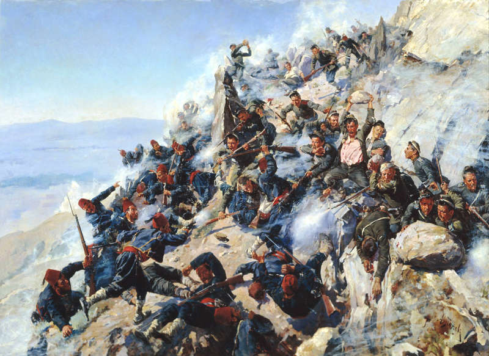

1877 - The liberation of Bulgaria

There is hardly a Bulgarian who does not feel proud at the mention of the date March 3. The liberation of
Bulgaria was the actual restoration of Bulgarian statehood after five hundred years of Ottoman rule, as a
result of the Russo-Turkish War (1877-1878). The foundations of Bulgarian independence were laid with the
San Stefano Peace Treaty. On April 12/24 (new style) 1877, a manifesto of Emperor Alexander II was issued in
Chisinau, declaring war on Russia by the Ottoman Empire. In addition to the Balkans, the fighting is taking
place in the Caucasus. By deceiving the enemy, the Russian army created a feeling in the Ottoman High Command
that the main Russian forces would be landed in Dobrudja. On June 15 (June 27), Russian units, commanded by
Major General Mikhail Dragomirov, landed on the Danube River near Zimnich-Svishtov
The main strategic plan of the Ottoman command was for Suleiman Pasha's group to break the cover units
fortified on the slopes of Shipka Peak and to cross into northern Bulgaria to join the besieged Ottoman
troops in Pleven under the command of Osman Pasha. It was then planned to repel Russian troops north of the
Danube through concerted action from the east, west and south. At this critical moment, the Russian high
command realized that it did not have a serious strategic reserve to repel the counterattack. The heroic
battles that took place under Shipka Peak decided the outcome of the war. The entire Bulgarian militia is also within the Front Detachment.
The victory of the defenders was a turning point, followed by a final victory for Russia in the rest of Bulgaria.The war ended with the signing of the
San Stefano Peace Treaty and the establishment of an independent Bulgarian principality. The restoration of Bulgaria was confirmed by the Treaty of Berlin,
and legally until 1908 the Principality of Bulgaria was a tribunal, although in practice it was independent of the High Gate.
The newly created Principality of Bulgaria is self-governing, but dependent on the Ottoman Empire. It is tributary (paying taxes)
with its own people's government and army. Eastern Rumelia was an area within the Empire that enjoyed administrative autonomy,
including its own armed forces ("local militia").